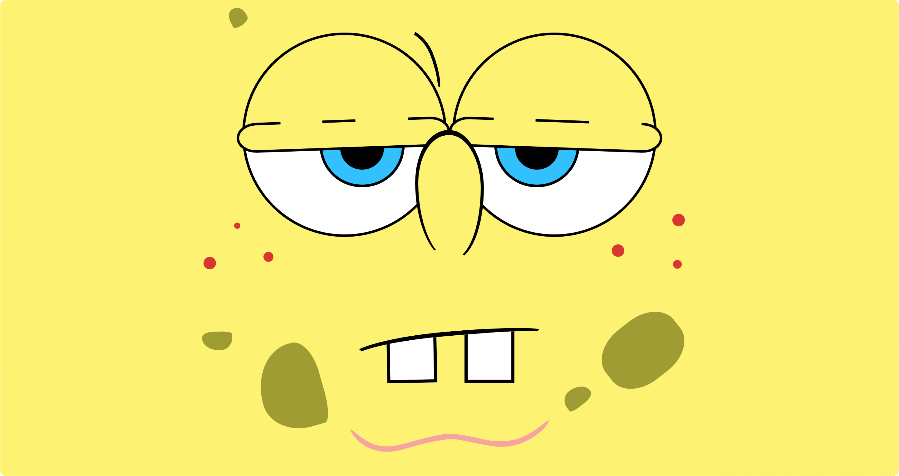
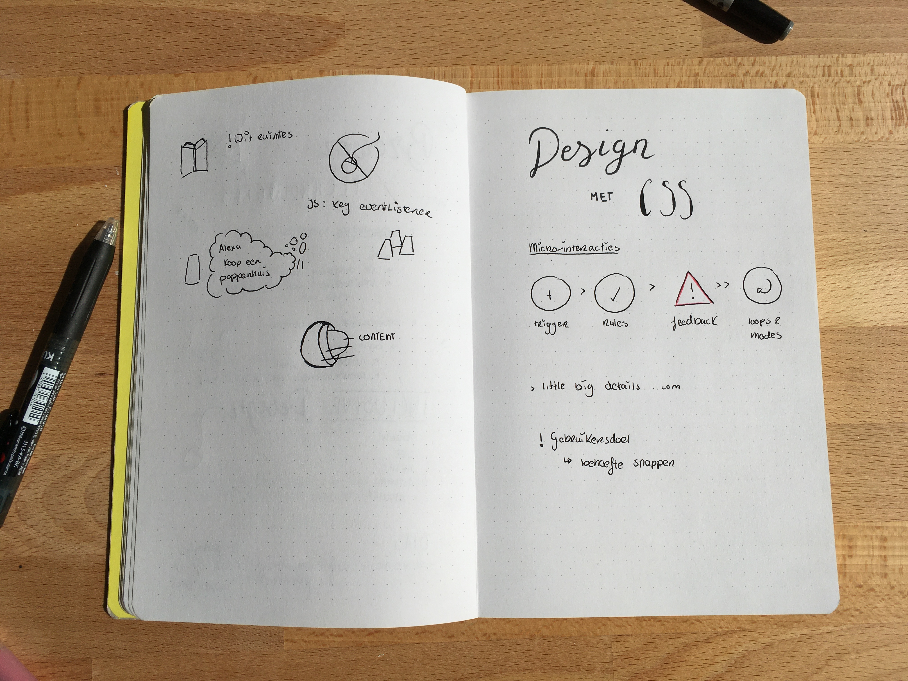

Design with CSS
Sanne ‘t Hooft is a teacher at the University of Applied Sciences (HvA). And he was invited to give us a lecture.
In which he showed us what you can create with CSS only. He also showed us a few examples created by his students, in fresman year. Which to be honest is pretty awesome to see, especially when they are just starting out.
The one that stood out to me the most was Spongebob, can you believe it? At first I thought the used vectors, but it turns out it’s only CSS. But to be honest they are all really awesome!

After this he explained a bit about micro interactions. He talked about the 4 components which would make micro interactions, based on Dan Saffers book ‘Microinteractions: Designing with Details’.
 Sketchnotes (dutch)
conclusion
After the lecture I got more interested to design things so I could create it with CSS.
It definitely sparked my interest to create more things with CSS. And I hope to do so in the near future.